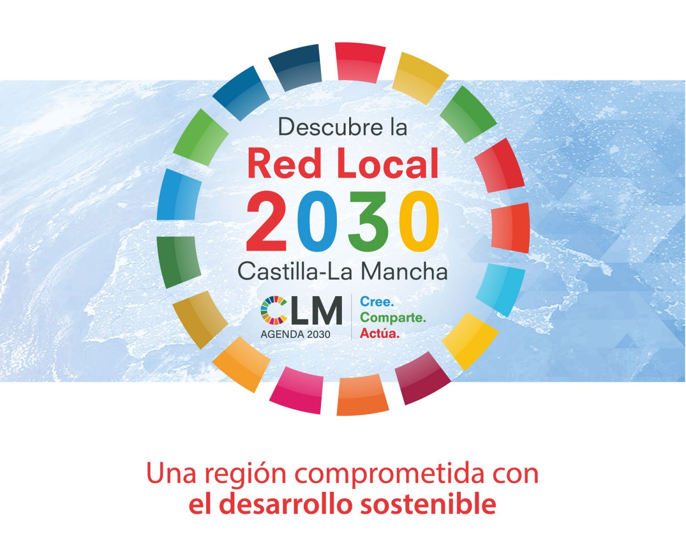
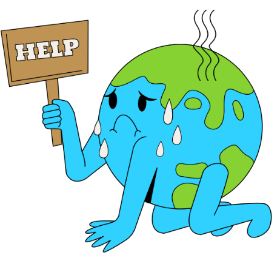
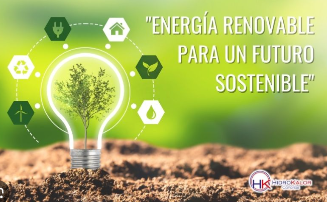
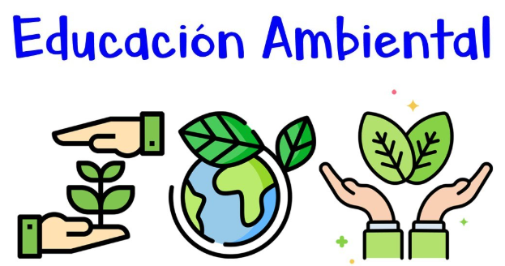
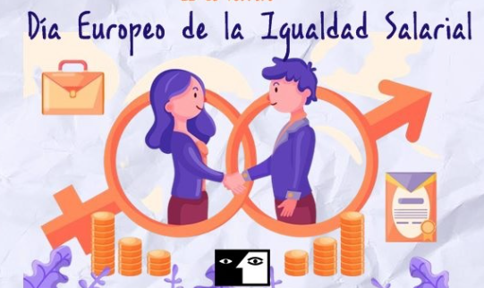
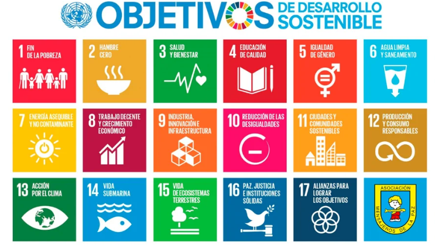

Bienvenido al Portal de Eventos Sostenibles
Conéctate con iniciativas en Castilla-La Mancha y España que promueven el desarrollo sostenible, juntos por un mundo mejor.
Eventos Destacados

Taller - Red Local 2030
Fecha: 21 de Marzo, 2025
Ubicación: Fuente el Fresno, Ciudad Real
Un encuentro para representantes municipales enfocado en la implementación de los Objetivos de Desarrollo Sostenible (ODS).

Encuentro UCLM contra el Cambio Climático
Fecha: 24 de Octubre, 2024
Ubicación: CIFP Virgen de Gracia, Puertollano
Promovido por la Consejería de Desarrollo Sostenible y la UCLM, este evento aborda estrategias para combatir el cambio climático.

I Jornada de Coherencia de Políticas para el Desarrollo Sostenible
Fecha: 18 de Marzo, 2024
Ubicación: Indra, Ciudad Real
Un evento para analizar cómo las políticas públicas pueden alinearse con los ODS.

III Encuentro Regional de Educación Ambiental
Fecha: 29-30 de Enero, 2025
Ubicación: On-line
Jornadas para destacar la educación ambiental como herramienta clave para la sostenibilidad.

Día Europeo de la Igualdad Salarial
Fecha: 22 de Febrero, 2024
Ubicación: On-line
Un evento para concienciar sobre la brecha salarial de género y promover la igualdad.

Presentación de la Guía "Co-Creando Futuros Sostenibles"
Fecha: 4 de Marzo, 2025
Ubicación: Formato Híbrido (Online y Presencial)
Un evento para explorar estrategias de sostenibilidad en colaboración con entidades locales.